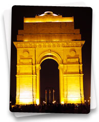
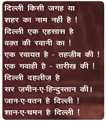
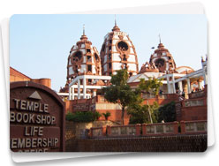

Modern Delhi, popularly known as Lutyens' Delhi, bears a striking contrast to Old Delhi with respect to architecture, building materials and layout. However, Modern Delhi itself dates back to over a century when the British shifted their capital from Calcutta to Delhi. New Delhi, as it is known today, designed by Lutyens, has wide-open lanes, avenues and buildings that are worth traveling across the globe for.
Besides the usual tourist attractions of Modern Delhi - India Gate, Rashtrapati Bhavan, Parliament House, North and South Block - which are stunning examples of British architecture, you can also visit the various museums, temples and memorials that provide a comprehensive and entertaining insight into the lives of Delhites.
National Museum, at par with any international museum, is an important place to visit in modern Delhi. Here, you can catch glimpses of the rich historical past of India, from the ancient period to the medieval ages.
National Rail Museum documents the more than 150-year-old history of Indian railways, including the first steam engine that ran from Thane, Mumbai in 1853 that marked the beginning of Indian Railways.
Modern Delhi has some popular temples of Modern India that are known not only for their religious significance but also for their experimental designs that challenge conventional architectural standards. The Lakshmi Narayan Temple (Birla Temple), built by the Birlas, is dedicated to the worship of Lord Lakshmi Narayan (Vishnu). Another temple worth a visit on your tour of Modern Delhi is the Lotus Temple built by followers of the Bahai faith. Built in the shape of a blooming lotus, the temple draws thousands of tourists each day.
Iskon (International Society for Krishna Consciousness) Temple boasts of a vegetarian restaurant, library, animatronics center and an upcoming museum besides the prayers and meditation facilities.
The newly built Akshardham temple is a very popular destination for tourists and Delhites. The temple is situated on the banks of Yamuna River, and is besides the Common Wealth Games village.
New Delhi has memorials of famous freedom fighters and National leaders. Raj Ghat, Shanti Van, Shakti Sthal are the resting place of Mahatma Gandhi, Jawaharlal Nehru and Indira Gandhi respectively. You can also visit the Teen Murti Bhavan (Nehru Memorial Museum), Gandhi Smriti and Indira Gandhi Memorial.
The capital has a charming mix of old and new world. On one side you can see Old architectural sites, buzzing streets and exotic markets, and on the other side Delhi has magnificent Malls, swan by overbridges, modern opulent high rise buildings and lots of greenery.